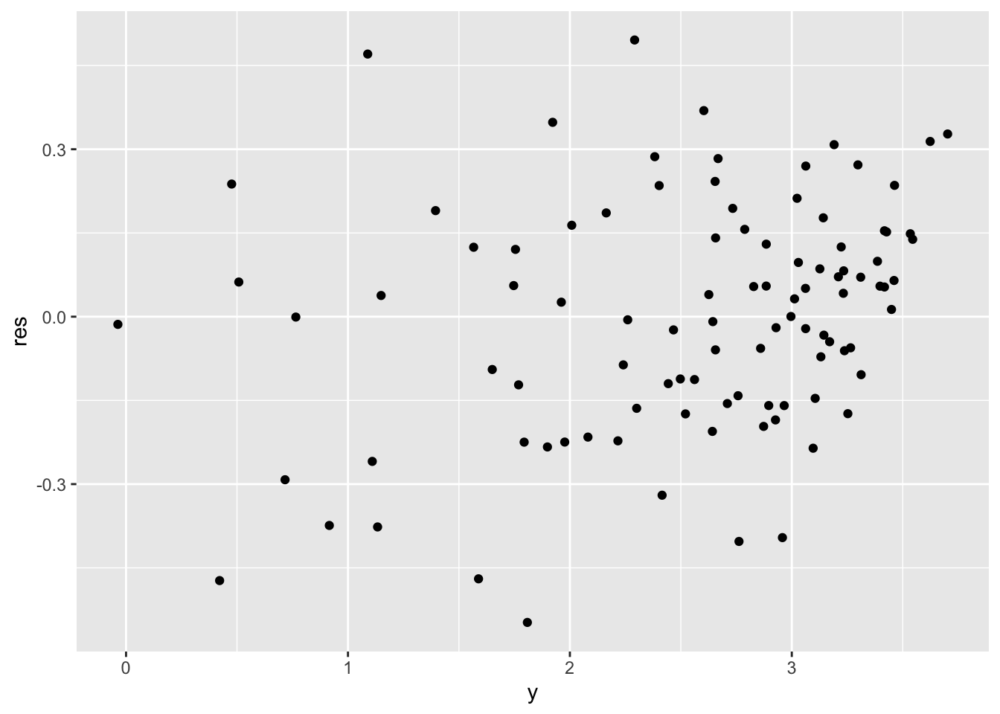

Chapter 6 Interactions and qualitative predictors
6.1 Transformations
Formulae in R linear models are much more powerful than what seen so far. In some cases we might be interested in transforming a variable before fitting the linear model.
6.1.1 A simple example
For instance, let’s take this synthetic dataset:
library(tibble)
n <- 100
synth <- tibble(
x = seq(from = 1, to = 30, length.out = n),
y = log(x) + rnorm(n, 0, 0.2)
)which looks like this:
library(ggplot2)
ggplot(synth) +
geom_point(aes(x, y))
Of course, we can try to fit a linear model without any extra effort
naive_lm <- lm(y ~ x, data = synth)
ggplot(naive_lm, mapping = aes(x, y)) +
geom_point() +
geom_smooth(method = "lm", color = "red")## `geom_smooth()` using formula = 'y ~ x'
but if we plot the residuals, we can detect some issues for low values of \(y\) (definitely not uncorrelated).
synth %>%
mutate(res = naive_lm$residuals) %>% # adds the residual column
ggplot() +
geom_point(aes(y, res))
By understanding how \(x\) is distributed, we can fix this issue and fit the model on a transformation of itself, clearly \(\log(x)\). We do this simply by adding the desired transformation in the formula, meaning that we don’t have to tranform the dataset beforehand.
log_lm <- lm(y ~ log(x), data = synth)
ggplot(log_lm,
mapping = aes(`log(x)`, y)
) + # notice the backticks!
geom_point() +
geom_smooth(method = "lm", color = "red")## `geom_smooth()` using formula = 'y ~ x'
and the residuals plot.
synth %>%
mutate(res = log_lm$residuals) %>% # adds the residual column
ggplot() +
geom_point(aes(y, res))
6.1.2 On advertising
Back to our real dataset.
library(readr)
advertising <- read_csv("./datasets/advertising.csv")## Rows: 200 Columns: 4
## ── Column specification ────────────────────────────────────────────────────────
## Delimiter: ","
## dbl (4): TV, Radio, Newspaper, Sales
##
## ℹ Use `spec()` to retrieve the full column specification for this data.
## ℹ Specify the column types or set `show_col_types = FALSE` to quiet this message.Let’s try applying a transformation to the most promising predictor, in particular let’s us \(\sqrt{TV}\). The choice of the square root transformation comes from a first look at the scatter plot shown previously (TV against Sales), where we can detect a slightly curved trend which resembles a curve \(y = \sqrt{x}\).
Let’s plot the data after the transformation and observe that it’s trend better fit a straight line.
advertising %>%
dplyr::select(Sales, TV) %>%
dplyr::mutate(sqrtTV = sqrt(TV)) %>%
ggplot(aes(sqrtTV, Sales)) +
geom_point() +
geom_smooth(method = "lm", color = "red")## `geom_smooth()` using formula = 'y ~ x'We can fit a linear model. It’s summary table
will show a better \(R^2\) score.
trans_lm <- lm(Sales ~ sqrt(TV), data = advertising)Exercise: plot the regression line and compare it with the simple model fitted on the raw data
The following two commands might help in inspecting a linear model with transformed data.
head(model.matrix(trans_lm)) # prints the design matrix## (Intercept) sqrt(TV)
## 1 1 15.169047
## 2 1 6.670832
## 3 1 4.147288
## 4 1 12.308534
## 5 1 13.446189
## 6 1 2.949576trans_lm$terms # inspect the linear model specifics## Sales ~ sqrt(TV)
## attr(,"variables")
## list(Sales, sqrt(TV))
## attr(,"factors")
## sqrt(TV)
## Sales 0
## sqrt(TV) 1
## attr(,"term.labels")
## [1] "sqrt(TV)"
## attr(,"order")
## [1] 1
## attr(,"intercept")
## [1] 1
## attr(,"response")
## [1] 1
## attr(,".Environment")
## <environment: R_GlobalEnv>
## attr(,"predvars")
## list(Sales, sqrt(TV))
## attr(,"dataClasses")
## Sales sqrt(TV)
## "numeric" "numeric"6.2 Model selection
6.2.1 R-squared
One of the indicators computed with summary on a fitted linear model
is the \(R^2\) index (R-squared, or coefficient of determination). It is defined as
\[ R^2 = 1 - \frac{\sum_i (y_i - \hat y_i)^2}{\sum_i (y_i - \bar y)^2} \]
and shows the impact of the residuals proportionately to the variance of the response variable. It can be used to compare different models although it should not be considered as an absolute score of the model. The closer it is to 1, the better is the model fit.
This output, for instance, shows how the transformation used above seems to improve the accuracy of the regression task.
simple_lm <- lm(Sales ~ TV, data = advertising)
summary(simple_lm)$r.squared## [1] 0.8121757summary(trans_lm)$r.squared## [1] 0.82166966.2.2 ANOVA
Another way of comparing two models, in particular one model with a smaller nested model, is the ANOVA test, which is an instance of the F-test. A low p-value for the F statistic means that we can reject the hypothesis that the smaller model explains the data well enough.
Here we compare the model with a single predictor (squared root of TV), which is the smaller model, with a model with also the Radio data as additional predictor.
double_lm <- lm(Sales ~ sqrt(TV) + Radio, data = advertising)
anova(trans_lm, double_lm)## Analysis of Variance Table
##
## Model 1: Sales ~ sqrt(TV)
## Model 2: Sales ~ sqrt(TV) + Radio
## Res.Df RSS Df Sum of Sq F Pr(>F)
## 1 198 990.80
## 2 197 410.88 1 579.92 278.04 < 2.2e-16 ***
## ---
## Signif. codes: 0 '***' 0.001 '**' 0.01 '*' 0.05 '.' 0.1 ' ' 16.3 Qualitative predictors
Qualitative predictors are represented in R through factors.
Although it’s not always necessary, it is always best to
explicitly tell R to interpret qualitative predictors data as factors.
This can be done with read_csv, first by reading the data as it is
and then calling the spec() function over the new tibble.
wide_golf <- read_csv("./datasets/golfer.csv")## Rows: 10 Columns: 5
## ── Column specification ────────────────────────────────────────────────────────
## Delimiter: ","
## dbl (5): golfer, A, B, C, D
##
## ℹ Use `spec()` to retrieve the full column specification for this data.
## ℹ Specify the column types or set `show_col_types = FALSE` to quiet this message.spec(wide_golf) # prints information about the detected data types## cols(
## golfer = col_double(),
## A = col_double(),
## B = col_double(),
## C = col_double(),
## D = col_double()
## )In this case, the output is saying that the first column has
been detected as numeric, which is false, because the golfer
number is just an identification number.
Therefore we correct this by copying the output, manually editing
the first column type from col_double() to col_factor() and
setting the read_csv parameter col_types to that.
wide_golf <- read_csv("./datasets/golfer.csv",
col_types = cols(
golfer = readr::col_factor(),
A = col_double(),
B = col_double(),
C = col_double(),
D = col_double()
)
)
library(dplyr)
# need to switch from wide to long format
golf <- wide_golf %>%
gather(brand, distance, -golfer)
## if using data.frame, you can use `melt()` from
## reshape2
# golf <- melt(wide_golf, id.vars = 1,
# variable.name = "brand",
# value.name = "distance")Now, for example, we fit a linear model using all the available columns
complete_lm <- lm(distance ~ ., data = golf)and we can compare it to a smaller model with ANOVA test.
small_lm <- lm(distance ~ golfer, data = golf)
anova(small_lm, complete_lm)## Analysis of Variance Table
##
## Model 1: distance ~ golfer
## Model 2: distance ~ golfer + brand
## Res.Df RSS Df Sum of Sq F Pr(>F)
## 1 30 6026.0
## 2 27 2358.8 3 3667.2 13.992 1.076e-05 ***
## ---
## Signif. codes: 0 '***' 0.001 '**' 0.01 '*' 0.05 '.' 0.1 ' ' 1Another variance test can be performed with aov.
Check the function documentation for more details.
aov(distance ~ golfer + brand, data = golf)## Call:
## aov(formula = distance ~ golfer + brand, data = golf)
##
## Terms:
## golfer brand Residuals
## Sum of Squares 9745.734 3667.226 2358.764
## Deg. of Freedom 9 3 27
##
## Residual standard error: 9.346744
## Estimated effects may be unbalanced6.4 Predict
Especially when dealing with qualitative data, predictions for
new unseen data can be easily computed with the predict function,
which simply applies the regression coefficients to the provided data
(arbitrarily generated below inside a tibble).
predict(complete_lm, tibble(golfer = c("1", "1", "2"), brand = c("A", "B", "B")),
interval = "confidence"
)## fit lwr upr
## 1 204.105 193.1719 215.0381
## 2 210.235 199.3019 221.1681
## 3 249.810 238.8769 260.74316.5 Interactions
Interactions are added in the lm formula. More specifically:
a:b(colon op) includes the cross-variable between two predictorsa*b(asterisk op) includes the two predictors individually and the cross-variable (i.e. writingy ~ a + b + a:bis equivalent to writingy ~ a*b)
inter_lm <- lm(distance ~ golfer * brand, data = golf)